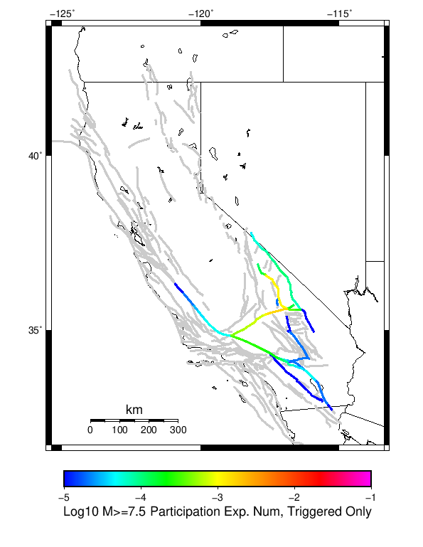

| Searles Valley M6.4 | |
|---|---|
| Num Simulations | 3500 (incomplete) |
| Start Time | 2019/07/04 17:33:48 UTC |
| Start Time Epoch Milliseconds | 1562261628000 |
| Duration | 10 Years |
| Includes Spontaneous? | false |
| Historical Ruptures | (none) |
Legend
| Mag | Mean | 2.5 %ile | 97.5 %ile | Median | Mode | 10 yr Probability | Primary Aftershocks Mean |
|---|---|---|---|---|---|---|---|
| M≥2.5 | 926.133 | 540.000 | 2485.000 | 718.000 | 667.000 | 1.000 | 417.768 |
| M≥2.6 | 735.670 | 428.000 | 1994.000 | 570.000 | 491.000 | 1.000 | 331.901 |
| M≥2.7 | 584.041 | 336.000 | 1575.000 | 453.000 | 423.000 | 1.000 | 263.453 |
| M≥2.8 | 463.692 | 264.000 | 1258.000 | 359.000 | 311.000 | 1.000 | 209.045 |
| M≥2.9 | 368.328 | 208.000 | 1008.000 | 287.000 | 253.000 | 1.000 | 166.107 |
| M≥3 | 292.649 | 163.000 | 797.000 | 229.000 | 193.000 | 1.000 | 132.050 |
| M≥3.1 | 232.279 | 126.000 | 626.000 | 182.000 | 154.000 | 1.000 | 104.963 |
| M≥3.2 | 184.726 | 98.000 | 492.000 | 145.000 | 128.000 | 1.000 | 83.463 |
| M≥3.3 | 146.848 | 77.000 | 389.000 | 116.000 | 98.000 | 1.000 | 66.359 |
| M≥3.4 | 116.620 | 59.000 | 314.000 | 92.000 | 82.000 | 1.000 | 52.689 |
| M≥3.5 | 92.589 | 45.000 | 255.000 | 73.000 | 61.000 | 1.000 | 41.810 |
| M≥3.6 | 73.509 | 34.000 | 204.000 | 58.000 | 48.000 | 1.000 | 33.193 |
| M≥3.7 | 58.404 | 26.000 | 161.000 | 46.000 | 42.000 | 1.000 | 26.399 |
| M≥3.8 | 46.342 | 20.000 | 129.000 | 37.000 | 30.000 | 1.000 | 21.007 |
| M≥3.9 | 36.804 | 14.000 | 103.000 | 29.000 | 25.000 | 1.000 | 16.671 |
| M≥4 | 29.221 | 10.000 | 85.000 | 23.000 | 17.000 | 1.000 | 13.232 |
| M≥4.1 | 23.154 | 8.000 | 67.000 | 18.000 | 15.000 | 1.000 | 10.511 |
| M≥4.2 | 18.337 | 5.000 | 54.000 | 14.000 | 13.000 | 1.000 | 8.349 |
| M≥4.3 | 14.536 | 4.000 | 42.000 | 11.000 | 8.000 | 1.000 | 6.612 |
| M≥4.4 | 11.537 | 2.000 | 35.000 | 9.000 | 6.000 | 0.999 | 5.221 |
| M≥4.5 | 9.129 | 2.000 | 28.000 | 7.000 | 6.000 | 0.996 | 4.144 |
| M≥4.6 | 7.234 | 1.000 | 23.000 | 5.000 | 4.000 | 0.986 | 3.305 |
| M≥4.7 | 5.722 | 0.000 | 19.000 | 4.000 | 3.000 | 0.967 | 2.617 |
| M≥4.8 | 4.540 | 0.000 | 15.000 | 3.000 | 2.000 | 0.938 | 2.078 |
| M≥4.9 | 3.601 | 0.000 | 13.000 | 3.000 | 2.000 | 0.897 | 1.649 |
| M≥5 | 2.849 | 0.000 | 10.000 | 2.000 | 1.000 | 0.845 | 1.301 |
| M≥5.1 | 2.244 | 0.000 | 9.000 | 2.000 | 1.000 | 0.773 | 1.018 |
| M≥5.2 | 1.774 | 0.000 | 7.000 | 1.000 | 0.000 | 0.695 | 0.809 |
| M≥5.3 | 1.387 | 0.000 | 6.000 | 1.000 | 0.000 | 0.613 | 0.634 |
| M≥5.4 | 1.092 | 0.000 | 5.000 | 1.000 | 0.000 | 0.534 | 0.501 |
| M≥5.5 | 0.871 | 0.000 | 4.000 | 0.000 | 0.000 | 0.458 | 0.399 |
| M≥5.6 | 0.689 | 0.000 | 4.000 | 0.000 | 0.000 | 0.391 | 0.310 |
| M≥5.7 | 0.539 | 0.000 | 3.000 | 0.000 | 0.000 | 0.329 | 0.241 |
| M≥5.8 | 0.413 | 0.000 | 3.000 | 0.000 | 0.000 | 0.264 | 0.182 |
| M≥5.9 | 0.314 | 0.000 | 2.000 | 0.000 | 0.000 | 0.213 | 0.141 |
| M≥6 | 0.243 | 0.000 | 2.000 | 0.000 | 0.000 | 0.171 | 0.107 |
| M≥6.1 | 0.174 | 0.000 | 2.000 | 0.000 | 0.000 | 0.130 | 0.081 |
| M≥6.2 | 0.124 | 0.000 | 1.000 | 0.000 | 0.000 | 0.097 | 0.057 |
| M≥6.3 | 0.093 | 0.000 | 1.000 | 0.000 | 0.000 | 0.073 | 0.044 |
| M≥6.4 | 0.066 | 0.000 | 1.000 | 0.000 | 0.000 | 0.054 | 0.030 |
| M≥6.5 | 0.046 | 0.000 | 1.000 | 0.000 | 0.000 | 0.039 | 0.020 |
| M≥6.6 | 0.033 | 0.000 | 1.000 | 0.000 | 0.000 | 0.029 | 0.014 |
| M≥6.7 | 0.024 | 0.000 | 0.000 | 0.000 | 0.000 | 0.022 | 0.011 |
| M≥6.8 | 0.018 | 0.000 | 0.000 | 0.000 | 0.000 | 0.017 | 8.86E-3 |
| M≥6.9 | 0.012 | 0.000 | 0.000 | 0.000 | 0.000 | 0.012 | 6.00E-3 |
| M≥7 | 8.57E-3 | 0.000 | 0.000 | 0.000 | 0.000 | 8.57E-3 | 3.14E-3 |
| M≥7.1 | 7.14E-3 | 0.000 | 0.000 | 0.000 | 0.000 | 7.14E-3 | 2.29E-3 |
| M≥7.2 | 5.43E-3 | 0.000 | 0.000 | 0.000 | 0.000 | 5.43E-3 | 1.71E-3 |
| M≥7.3 | 3.43E-3 | 0.000 | 0.000 | 0.000 | 0.000 | 3.43E-3 | 8.57E-4 |
| M≥7.4 | 2.57E-3 | 0.000 | 0.000 | 0.000 | 0.000 | 2.57E-3 | 8.57E-4 |
| M≥7.5 | 2.29E-3 | 0.000 | 0.000 | 0.000 | 0.000 | 2.29E-3 | 8.57E-4 |
| M≥7.6 | 1.43E-3 | 0.000 | 0.000 | 0.000 | 0.000 | 1.43E-3 | 2.86E-4 |
| M≥7.7 | 5.71E-4 | 0.000 | 0.000 | 0.000 | 0.000 | 5.71E-4 | 0.000 |
| M≥7.8 | 2.86E-4 | 0.000 | 0.000 | 0.000 | 0.000 | 2.86E-4 | 0.000 |
| M≥7.9 | 0.000 | 0.000 | 0.000 | 0.000 | 0.000 | 0.000 | 0.000 |
| M≥8 | 0.000 | 0.000 | 0.000 | 0.000 | 0.000 | 0.000 | 0.000 |
| M≥8.1 | 0.000 | 0.000 | 0.000 | 0.000 | 0.000 | 0.000 | 0.000 |
| M≥8.2 | 0.000 | 0.000 | 0.000 | 0.000 | 0.000 | 0.000 | 0.000 |
| M≥8.3 | 0.000 | 0.000 | 0.000 | 0.000 | 0.000 | 0.000 | 0.000 |
| M≥8.4 | 0.000 | 0.000 | 0.000 | 0.000 | 0.000 | 0.000 | 0.000 |
| M≥8.5 | 0.000 | 0.000 | 0.000 | 0.000 | 0.000 | 0.000 | 0.000 |
| M≥8.6 | 0.000 | 0.000 | 0.000 | 0.000 | 0.000 | 0.000 | 0.000 |
| M≥8.7 | 0.000 | 0.000 | 0.000 | 0.000 | 0.000 | 0.000 | 0.000 |
| M≥8.8 | 0.000 | 0.000 | 0.000 | 0.000 | 0.000 | 0.000 | 0.000 |
| M≥8.9 | 0.000 | 0.000 | 0.000 | 0.000 | 0.000 | 0.000 | 0.000 |
| M≥9 | 0.000 | 0.000 | 0.000 | 0.000 | 0.000 | 0.000 | 0.000 |
These plots show how the probability of ruptures of various magnitudes within 100km of any scenario rupture changes over time

| Forecast Duration | UCERF3-ETAS [95% Conf] | UCERF3-ETAS Triggered Only | UCERF3-TD | UCERF3-TI |
|---|---|---|---|---|
| 1 Hour | 0.264 [0.250 - 0.279] | 0.264 | 5.52E-5 | 5.47E-5 |
| 1 Day | 0.532 [0.516 - 0.549] | 0.532 | 1.32E-3 | 1.31E-3 |
| 1 Week | 0.646 [0.630 - 0.662] | 0.643 | 9.23E-3 | 9.16E-3 |
| 1 Month | 0.722 [0.707 - 0.736] | 0.711 | 0.039 | 0.039 |
| 1 Year | 0.870 [0.861 - 0.878] | 0.789 | 0.384 | 0.381 |
| 10 Years | 0.999 [0.999 - 0.999] | 0.843 | 0.992 | 0.992 |
| 30 Years | 1.000 [1.000 - 1.000] * | * | 1.000 | 1.000 |
| 100 Years | 1.000 [1.000 - 1.000] * | * | 1.000 | 1.000 |
* forecast duration is longer than simulation length, only ETAS ruptures from the first 10 years are included

| Forecast Duration | UCERF3-ETAS [95% Conf] | UCERF3-ETAS Triggered Only | UCERF3-TD | UCERF3-TI |
|---|---|---|---|---|
| 1 Hour | 0.028 [0.023 - 0.034] | 0.028 | 6.60E-6 | 6.15E-6 |
| 1 Day | 0.071 [0.063 - 0.080] | 0.071 | 1.58E-4 | 1.48E-4 |
| 1 Week | 0.097 [0.087 - 0.107] | 0.096 | 1.11E-3 | 1.03E-3 |
| 1 Month | 0.116 [0.106 - 0.127] | 0.112 | 4.74E-3 | 4.42E-3 |
| 1 Year | 0.188 [0.177 - 0.199] | 0.140 | 0.056 | 0.052 |
| 10 Years | 0.534 [0.527 - 0.541] | 0.168 | 0.440 | 0.417 |
| 30 Years | 0.854 [0.852 - 0.857] * | * | 0.825 | 0.801 |
| 100 Years | 0.998 [0.998 - 0.998] * | * | 0.997 | 0.995 |
* forecast duration is longer than simulation length, only ETAS ruptures from the first 10 years are included

| Forecast Duration | UCERF3-ETAS [95% Conf] | UCERF3-ETAS Triggered Only | UCERF3-TD | UCERF3-TI |
|---|---|---|---|---|
| 1 Hour | 5.72E-4 [9.96E-5 - 2.30E-3] | 5.71E-4 | 6.47E-7 | 5.84E-7 |
| 1 Day | 2.59E-3 [1.27E-3 - 5.08E-3] | 2.57E-3 | 1.55E-5 | 1.40E-5 |
| 1 Week | 4.11E-3 [2.39E-3 - 6.99E-3] | 4.00E-3 | 1.09E-4 | 9.81E-5 |
| 1 Month | 4.46E-3 [2.74E-3 - 7.34E-3] | 4.00E-3 | 4.66E-4 | 4.20E-4 |
| 1 Year | 0.012 [9.90E-3 - 0.016] | 6.57E-3 | 5.66E-3 | 5.10E-3 |
| 10 Years | 0.063 [0.061 - 0.067] | 8.57E-3 | 0.055 | 0.050 |
| 30 Years | 0.166 [0.164 - 0.169] * | * | 0.159 | 0.142 |
| 100 Years | 0.457 [0.456 - 0.459] * | * | 0.452 | 0.401 |
* forecast duration is longer than simulation length, only ETAS ruptures from the first 10 years are included
| Min Mag | Triggered Ruptures (no spontaneous) | Triggered Ruptures (primary aftershocks only) |
|---|---|---|
| All Supra. Seis. |  |  |
| M≥6.5 |  |  |
| M≥7 |  |  |
| M≥7.5 |  |  |
First 10 of 34 with matching ruptures shown
| Parent Name | Triggered Mean Count | Triggered 10 Year Prob | Triggered Primary Mean Count |
|---|---|---|---|
| Tank Canyon | 0.03657143 | 0.032 | 0.012285714 |
| Garlock (Central) | 0.009714286 | 0.009714286 | 0.0034285714 |
| Owl Lake | 0.006 | 0.0057142857 | 0.0014285714 |
| Panamint Valley | 0.0045714285 | 0.0045714285 | 0.002 |
| Garlock (East) | 0.004285714 | 0.004 | 5.7142857E-4 |
| Blackwater | 0.0034285714 | 0.0031428572 | 8.5714285E-4 |
| Little Lake | 0.0022857143 | 0.0022857143 | 8.5714285E-4 |
| Airport Lake | 0.0017142857 | 0.0017142857 | 8.5714285E-4 |
| Ash Hill | 0.0017142857 | 0.0017142857 | 5.7142857E-4 |
| Hunter Mountain-Saline Valley | 0.0017142857 | 0.0017142857 | 0.0011428571 |
First 10 of 28 with matching ruptures shown
| Parent Name | Triggered Mean Count | Triggered 10 Year Prob | Triggered Primary Mean Count |
|---|---|---|---|
| Garlock (Central) | 0.0051428573 | 0.0051428573 | 0.0014285714 |
| Panamint Valley | 0.004285714 | 0.004285714 | 0.002 |
| Tank Canyon | 0.004 | 0.004 | 0.002 |
| Owl Lake | 0.0025714287 | 0.0025714287 | 0.0 |
| Garlock (East) | 0.002 | 0.002 | 5.7142857E-4 |
| Airport Lake | 0.0014285714 | 0.0014285714 | 5.7142857E-4 |
| Hunter Mountain-Saline Valley | 0.0014285714 | 0.0014285714 | 8.5714285E-4 |
| Death Valley (So) | 0.0011428571 | 0.0011428571 | 2.8571428E-4 |
| Little Lake | 0.0011428571 | 0.0011428571 | 5.7142857E-4 |
| So Sierra Nevada | 8.5714285E-4 | 8.5714285E-4 | 0.0 |
First 10 of 15 with matching ruptures shown
| Parent Name | Triggered Mean Count | Triggered 10 Year Prob | Triggered Primary Mean Count |
|---|---|---|---|
| Garlock (Central) | 0.004857143 | 0.004857143 | 0.0014285714 |
| Panamint Valley | 0.002 | 0.002 | 8.5714285E-4 |
| Garlock (East) | 0.0017142857 | 0.0017142857 | 5.7142857E-4 |
| Hunter Mountain-Saline Valley | 0.0014285714 | 0.0014285714 | 8.5714285E-4 |
| Owl Lake | 0.0014285714 | 0.0014285714 | 0.0 |
| Death Valley (So) | 8.5714285E-4 | 8.5714285E-4 | 2.8571428E-4 |
| Death Valley (Black Mtns Frontal) | 5.7142857E-4 | 5.7142857E-4 | 0.0 |
| Death Valley (No) | 5.7142857E-4 | 5.7142857E-4 | 0.0 |
| So Sierra Nevada | 5.7142857E-4 | 5.7142857E-4 | 0.0 |
| Baker | 2.8571428E-4 | 2.8571428E-4 | 0.0 |
First 10 of 12 with matching ruptures shown
| Parent Name | Triggered Mean Count | Triggered 10 Year Prob | Triggered Primary Mean Count |
|---|---|---|---|
| Garlock (Central) | 0.0017142857 | 0.0017142857 | 8.5714285E-4 |
| Hunter Mountain-Saline Valley | 0.0014285714 | 0.0014285714 | 8.5714285E-4 |
| Panamint Valley | 0.0014285714 | 0.0014285714 | 8.5714285E-4 |
| Death Valley (Black Mtns Frontal) | 5.7142857E-4 | 5.7142857E-4 | 0.0 |
| Death Valley (No) | 5.7142857E-4 | 5.7142857E-4 | 0.0 |
| Death Valley (So) | 5.7142857E-4 | 5.7142857E-4 | 0.0 |
| Baker | 2.8571428E-4 | 2.8571428E-4 | 0.0 |
| Death Valley (Fish Lake Valley) | 2.8571428E-4 | 2.8571428E-4 | 0.0 |
| Garlock (East) | 2.8571428E-4 | 2.8571428E-4 | 0.0 |
| Garlock (West) | 2.8571428E-4 | 2.8571428E-4 | 0.0 |
| Min Mag | Triggered Ruptures (no spontaneous) | Triggered Ruptures (primary aftershocks only) |
|---|---|---|
| M≥2.5 |  |  |
| M≥5 |  |  |
| M≥6 |  |  |
| M≥7 |  |  |
{
"numSimulations": 100000,
"duration": 10.0,
"startTimeMillis": 1562261628000,
"includeSpontaneous": false,
"randomSeed": 123456789,
"binaryOutput": true,
"binaryOutputFilters": [
{
"prefix": "results_complete",
"descendantsOnly": false
},
{
"prefix": "results_m5_preserve_chain",
"minMag": 5.0,
"preserveChainBelowMag": true,
"descendantsOnly": false
},
{
"prefix": "results_triggered_descendants",
"descendantsOnly": true
}
],
"forceRecalc": false,
"reuseERFs": true,
"simulationName": "Searles Valley M6.4",
"numRetries": 3,
"outputDir": "${ETAS_SIM_DIR}/2019_07_04-SearlesValleyM64-includeSpont-full_td-10yr",
"triggerRuptures": [
{
"mag": 6.4,
"latitude": 35.705,
"longitude": -117.508,
"depth": 8.7
}
],
"cacheDir": "${ETAS_LAUNCHER}/inputs/cache_fm3p1_ba",
"fssFile": "${ETAS_LAUNCHER}/inputs/2013_05_10-ucerf3p3-production-10runs_COMPOUND_SOL_FM3_1_SpatSeisU3_MEAN_BRANCH_AVG_SOL.zip",
"probModel": "FULL_TD",
"applySubSeisForSupraNucl": true,
"totRateScaleFactor": 1.14,
"gridSeisCorr": true,
"timeIndependentERF": false,
"griddedOnly": false,
"imposeGR": false,
"includeIndirectTriggering": true,
"gridSeisDiscr": 0.1,
"catalogCompletenessModel": "RELAXED"
}